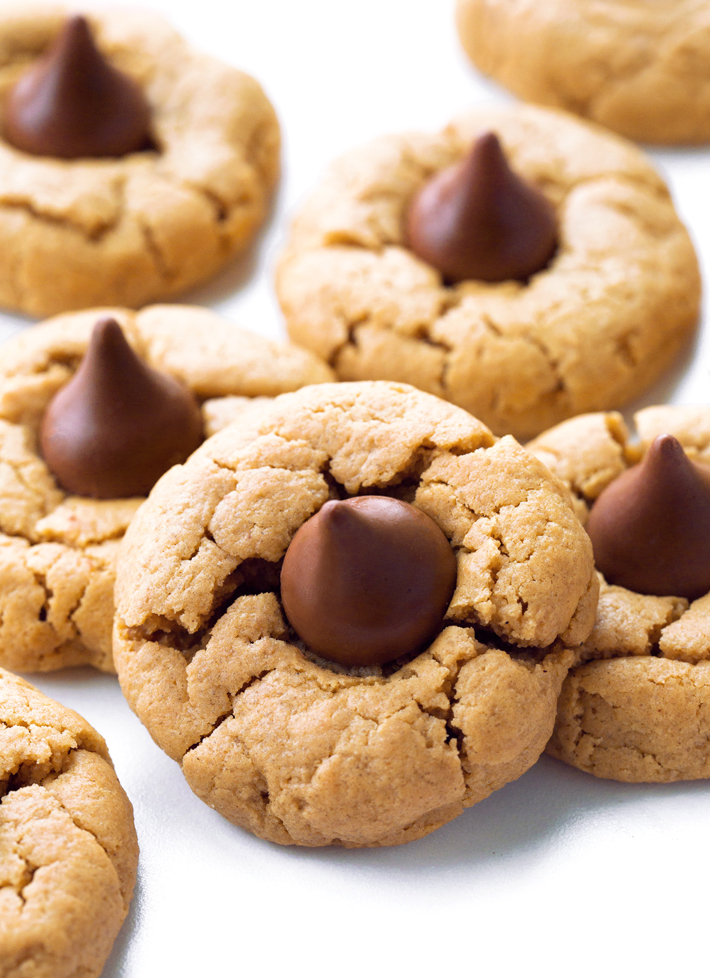

Vegan Peanut Butter Blossom Cookies

Description
These vegan peanut butter blossom cookies are so easy and delicious that you might wish you could unknow the recipe to save yourself from constant temptation. Alas, it is simple and you will retain it. Yields 7-10 cookies.
Ingredients
- 1/2 cup creamy peanut butter
- 3/4 tsp baking soda
- 3 tbsp non-dairy milk of choice
- 1/2 tsp pure vanilla extract
- 1/8 tsp salt
- 1/4 cup chocolate chips
Steps
- Prehead oven to 350 F.
- Combine all ingredients except chocolate and stir well.
- Roll dough into balls. Add flour as needed if dough is too sticky. If you want soft cookies, refrigerate cookie dough balls for at least 1 hour.
- Place cookie dough balls on nonstick cookie sheet (or parchment paper) and flatten with a fork.
- Place a few chocolate chips in the center of each cookie (or you can place them immediately after baking for a less-melted center).
- Bake cookies for 8 minutes. They will look underdone.
- Let cool for 10 minutes, then enjoy!